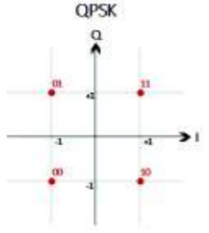

QPSK modulation
Performs the modulation based on the QPSK scheme.
Contents
Syntax
modulated = modulate_QPSK(data)
Description
function modulated = modulate_QPSK(data) returns a set of modulated bits based on the BPSK scheme. It assigns to each two input bits, a complex symbol according to the QPSK constellation diagram mentioned in the standard 802.11-2012.

Input Arguments
- data
Input vector, specified as an unmodulated bit vector.
Output Arguments
- modulated
Frequency modulated QPSK symbols.
Example
The function modulate_QPSK(data) is called.
function modulated = modulate_QPSK(data)
M is defined as the number of phases used for this modulation and m as the number of bits assigned to each symbol.
M = 4;
m = 2;
modulated = zeros(1,length(data)/m);
Each bit combination is assigned according to what is specified in the standard constellation diagram.
for i = 1:m:length(data) if data(i) == 1 if data(i+1)==1 %11 modulated( (i+1)/2 ) = 1+1i; else %10 modulated( (i+1)/2 ) = 1-1i; end else if data(i+1)==1 %01 modulated( (i+1)/2 ) = -1+1i; else %00 modulated( (i+1)/2 ) = -1-1i; end end end
end
See also